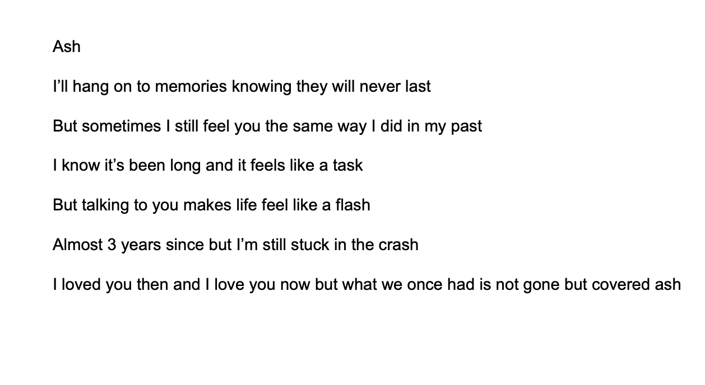

Blue Ink Gazette
Poetry — whispered between ink and ash
Home
Poetry
Literature
Photography
Cinematography
Art
Earth
— Samantha
Manufacturing Error
— Morgan Jones
Ash

— Ava Lujan
If I was a Writer
— Anonymous